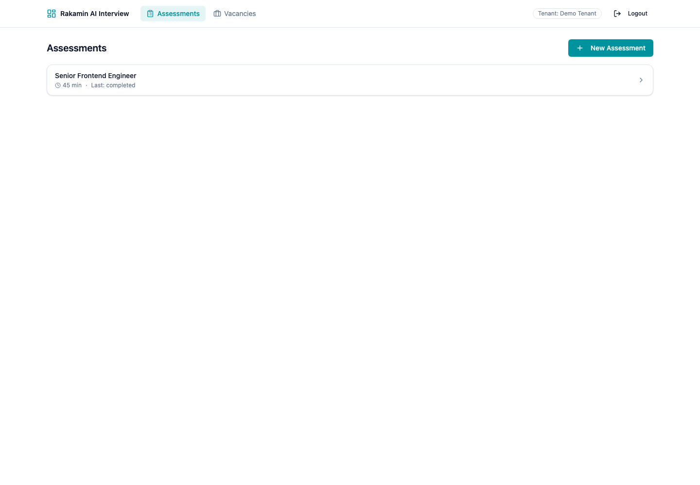
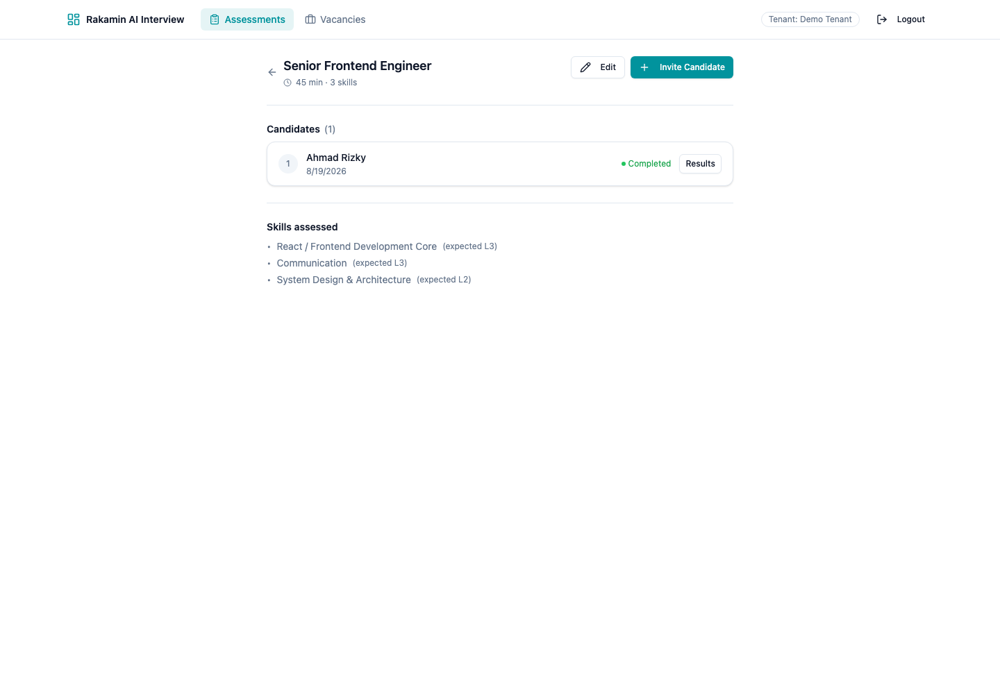
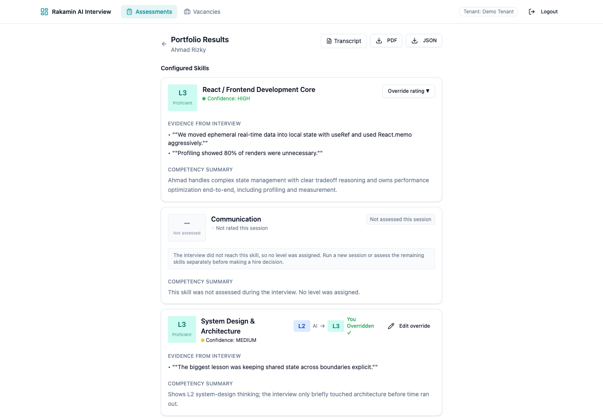
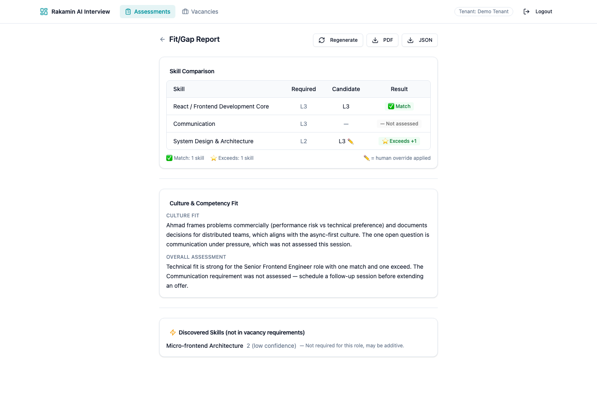
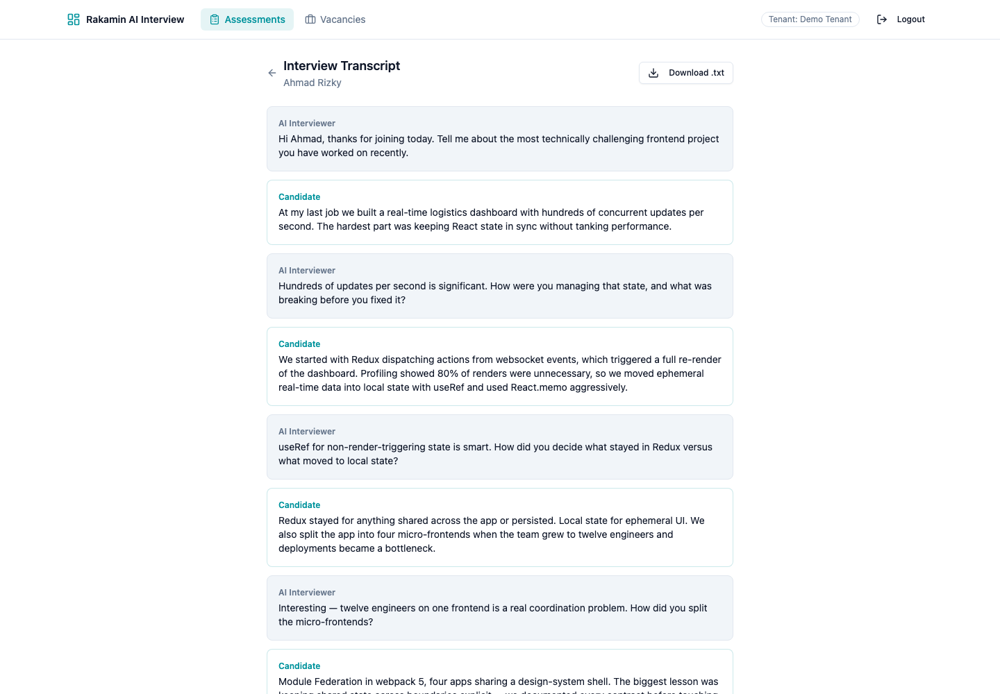

Candidate: Agus Setyawan Submission date: 19 August 2026 Engineering depth claim: Backend-heavy (data integrity + service logic), with a supporting frontend module (honest unassessed states + corrected fit/gap rendering).
PR link: https://github.com/rakamindev/ai-interview-platform/pull/63
api/, Ruby on Rails 7 + PostgreSQL + Sidekiq) on :3001, React web app (web/, React 18 + TypeScript + Vite + Tailwind) on :5173.Mapped the five pillars of the brief onto what the code actually does:
| Pillar | What I found |
|---|---|
| The product | A live audio interview where Gemini (Live) interviews a candidate against an assessment agenda, a coverage analyzer (Flash) tracks probe depth per skill, and a portfolio generator (Pro) turns the transcript into a per-skill level + confidence report. Assessors review, override, compare against vacancies (fit/gap), and export PDF/JSON. |
| The industry | Hiring/talent assessment in Indonesia is high-stakes and noisy. Commoditized parts (ATS, JD scraping) are everywhere; the leverage is defensible evidence behind a rating. A wrong rating "changes a real person's year". UU PDP (Law 27/2022) makes candidate PII handling a legal duty, not a nicety. |
| What it is for | Produce an evidence-backed skill portfolio an assessor can trust, then act on (fit/gap + override). It only stays useful if every number in the report is traceable to transcript quotes. |
| The users | Assessors/recruiters: fast, correct, defensible results; they already distrust black-box scores. |
| The candidates | Do not opt in, cannot opt out, and a wrong result changes their year. Design principle I adopted: never display a fabricated rating to a candidate. |
The single most damaging defect: the portfolio generator fabricated an L1 for any skill the interview never probed.
# Before — api/app/services/portfolios/generator.rb (old)
ai_level: skill_data['level'].to_i.clamp(1, 5) # nil.to_i == 0 → clamp → 1
When Gemini omitted a skill from its JSON (very common for skills the conversation never reached), the old code either (a) crashed the entire portfolio (create! failed on ai_confidence: nil against a NOT NULL column → candidate gets nothing at all), or (b) if the skill was returned with a weak payload, silently assigned L1 with low confidence — i.e. "you are rated at the bottom" without any evidence. Both are unacceptable for the person who never chose this product.
| # | Sev | Service | Finding | Impact (one line) |
|---|---|---|---|---|
| F1 | P1 | api | Portfolio generator fabricates L1 for unprobed skills or crashes when Gemini omits a skill (ai_confidence NOT NULL) |
Candidate receives a fake rating — or no portfolio at all |
| F2 | P1 | web | ComparisonTable reads required_level / is_override, but the API sends expected_level / overridden |
Required column renders blank and the human-override pencil mark never appears — assessors lose trust in the report |
| F3 | P1 | api | Fit/gap treats a portfolio skill with no rating as a "gap at L1" instead of "not assessed" | A skill that was never evaluated looks like a negative finding against the candidate |
| F4 | P2 | api | SessionsController#end_session returns 422 when already ended |
Double-click/retry shows a scary error to the assessor mid-workflow |
| F5 | P2 | web | parseLevel falls back to 1 for any missing/out-of-range level; LevelBadge/ConfidenceIndicator assume non-null |
Any null level → UI displays fake L1 or crashes (null.replace) |
| F6 | P2 | api | Assessment model allows zero skills → empty system prompt → unusable interview | Recruiter creates a broken assessment, discovered only at interview time |
| F7 | P3 | api | TenantScoped scopes to WHERE tenant_id IS NULL when the tenant key exists but is nil |
Subtle cross-scoping hazard in non-tenant code paths (fixed) |
| F8 | P3 | web | Fit/gap page showed only one of the two narratives; nothing when generation failed | Loses the overall recommendation in the common single-narrative case |
Missing-spec vs defective-implementation: F1/F4/F8 are defective implementations (the PRD specifies confidence rules and wrap-up flow; the code contradicts them). F2/F5/F6 are missing contracts — the API and UI never agreed on a payload shape, and nothing enforced an agenda.
Constraint signal (what I'd escalate to a Tech Lead): the shared JWT SECRET_KEY_BASE contract with rakamin-api and the absence of a Gemini API key in my environment meant I could not exercise the live audio path end-to-end; I verified all changes through the service layer with stubbed Gemini clients and seeded DB records, which is exactly the seam the product is missing (no model-level tests existed).
Goal: make every number in the portfolio and fit/gap report honest and traceable, and make the reports render that truth.
| Option A — Honest unassessed model (chosen) | Option B — Keep NOT NULL, skip unassessed skills | Option C — Client-side only | |
|---|---|---|---|
| Product impact | Candidate report shows every configured skill with an explicit "not assessed" state; no fake L1; fit/gap says not assessed instead of a phantom gap |
Candidate never sees unprobed skills (silent omission — worse for trust) | UI hides the lie instead of fixing the data |
| Cost | One reversible migration + generator/fit-gap changes + UI states | Zero migration; small code | Tiny |
| Maintainability | Single source of truth (assessed column); easy to evolve |
Needs ad-hoc "which skills are missing?" logic everywhere later | Leaves broken contract (F2) unfixed |
| Failure modes | Down-migration requires backfilling unassessed rows (raw SQL, verified) | Future feature work re-introduces fabricated ratings | Breaks as soon as another consumer reads the API |
| Contextual fit | This codebase has no tests; the model layer is the right place to make the invariant enforceable and testable | Cheapest today, worst next quarter | Not defensible in the technical interview |
Why A: the brief explicitly names "handling unassessed skills, missing ratings" as an edge case to define acceptance criteria for, and "Protected Data / reversible migrations". A gives an enforceable invariant with a reversible migration and honest UI.
Given an interview that never probed skill X:
assessed: false, ai_level: null, ai_confidence: null, and an explanatory summary. A test fails if a level is fabricated.not_assessed (not gap), with expected_level intact, and flags overridden correctly.end_session on an already-ended session returns 200 (idempotent).Implemented across 4 commits (see PR):
AddAssessedToPortfolioSkills migration (reversible; assessed default true so existing rows are safe; check constraint NOT assessed OR ai_level IS NULL OR (ai_level 1..5)); PortfolioSkill validations scoped to assessed rows; Assessment requires ≥ 1 skill; TenantScoped nil-tenant hardening.assessed: false (never a fabricated L1, never a crash). Fit/gap engine reports not_assessed for unassessed rows and exposes assessed/overridden. PDF export renders "Not assessed during this session".end_session idempotent; override rejected on unassessed skills (instead of a DB constraint crash); portfolio JSON includes assessed.ComparisonTable reads the real contract (expected_level, overridden, assessed); parseLevel returns null instead of a fake 1; SkillPortfolioCard, LevelBadge, ConfidenceIndicator render honest unassessed states; fit/gap page shows both narratives + fallback. Gemfile ruby constraint relaxed to ~> 3.3.2 so the app boots on patch releases.bundle exec rspec → 22 examples, 0 failures.npm run test → 10 passed; tsc --noEmit clean; vite build clean.On a scratch branch I reintroduced the old bug (return [1, 'low'] for missing skill data — the fabricated-L1 path):
3 examples, 3 failures
The generator specs failed immediately, proving they guard the invariant. The fault branch was then deleted and the feature branch re-verified green.
I used AI assistance (this session's tooling) to draft the ComparisonTable fix. The first draft referenced a variable named comparison that did not exist in the row-map scope (comparison.expected_level instead of c.expected_level) — it compiled nowhere and the Vitest run failed. Verification step: I did not accept the generated code; I ran the frontend suite and TypeScript, the failure surfaced the undefined reference, and I corrected it to the actual scoped variable. A second AI-suggested spec assertion (resolve_state expected 'initiated') was also proven wrong by executing the suite and fixed to the true behavior ('partial'). Both corrections are visible in the test files and this narrative. This is the exact "use AI as leverage you verify, not an oracle you trust" behavior the brief asks for.
Captured from the running app against seeded data — all states (assessed, unassessed, overridden, discovered) visible.





spec/models/assessment_spec.rb, spec/models/portfolio_skill_spec.rb, spec/services/coverage/state_engine_spec.rb, spec/services/portfolios/generator_spec.rb, spec/services/fit_gap/engine_spec.rb, spec/requests/sessions_spec.rb.utils/constants.test.ts, components/portfolio/SkillPortfolioCard.test.tsx, components/fitgap/ComparisonTable.test.tsx..github/workflows/ci.yml runs RSpec (Postgres + Redis services) and Vitest + tsc per PR.Video (3–5 min) recorded via Loom/Drive: end-to-end flow — assessment → invite → monitor → portfolio (unassessed/overridden states) → fit/gap → export.
Link: [insert Loom/Drive link here]